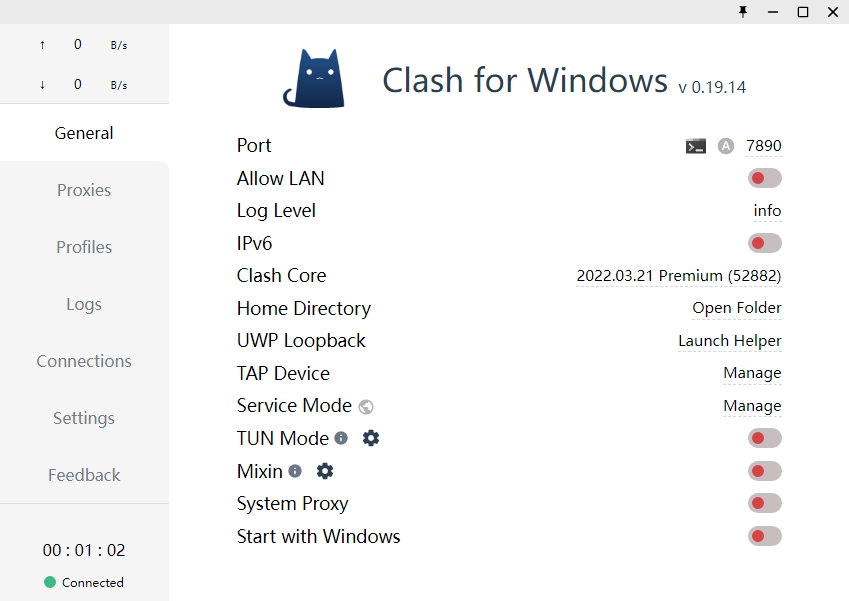
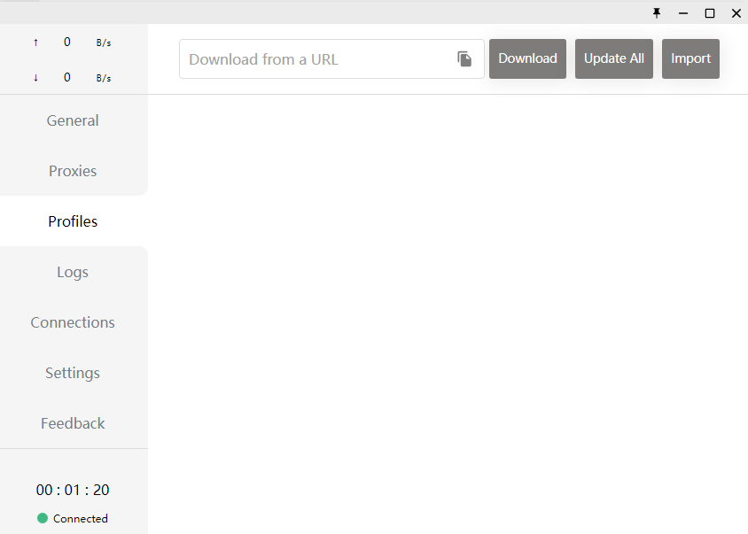
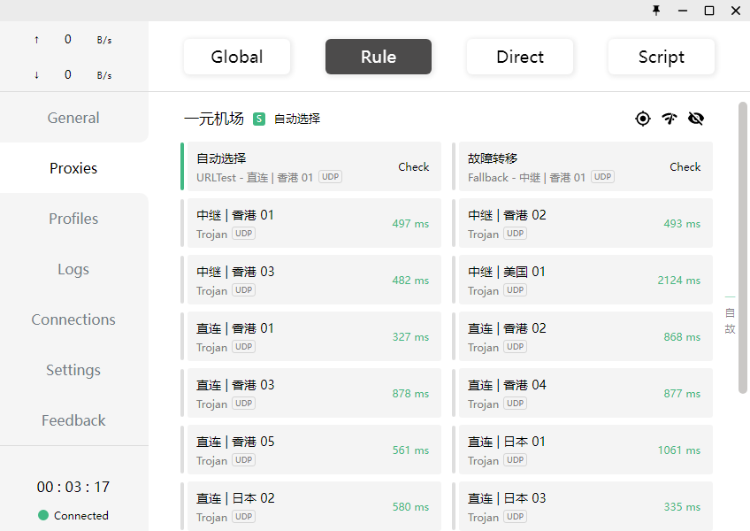

使用文档
Clash for Windows是Windows上流行的客户端，以下教程将提供Clash for Windows的基础使用方法。
请注意，教程编写时最新版为0.19.14，后续版本界面可能会与图片所示内容有所差异，请以最新版为准。
请在此处下载。
Clash.for.Windows-0.XX.XX-win.7z（XX.XX具体随版本号而定）是绿色版，解压即用。
Clash.for.Windows.Setup.0.XX.XX.exe（XX.XX具体随版本号而定）是安装版，使用前需安装。
在安装界面，如果出现Windows防火墙或杀软警告，请全部允许！
在安装完毕后，运行"Clash for Windows.exe"，进入如下界面：

点击左侧的“Profiles”，进入如下界面：

请在本站首页，仪表盘 - 一键订阅，复制您的订阅链接，并粘贴到界面上方的输入框中，然后点击“Download”按钮。
下载好之后，此界面会出现一个订阅，点击它。
如果发现节点不能使用，请先点击“Update All”按钮更新订阅！
点击左侧的“Proxies”，进入如下界面：

上方的按钮是代理模式，其中Script不常用，其它介绍如下：
Global是全局代理，若选择此项，所有的网站经过代理访问。
Rule是规则代理，若选择此项，只有国外的网站才会经过代理访问。
Direct是全部直连，若选择此项，则所有网站都不经过代理。
在选择了代理模式之后，选择一个希望使用的节点，然后回到“General”。
将倒数第二行的“System Proxy”开启，即可代理浏览器流量。
如果想要了解更多，请查阅Clash文档。
请注意：Clash默认情况下只代理浏览器，若需代理Windows应用，请使用TUN模式，TUN模式使用方式请自行查阅。